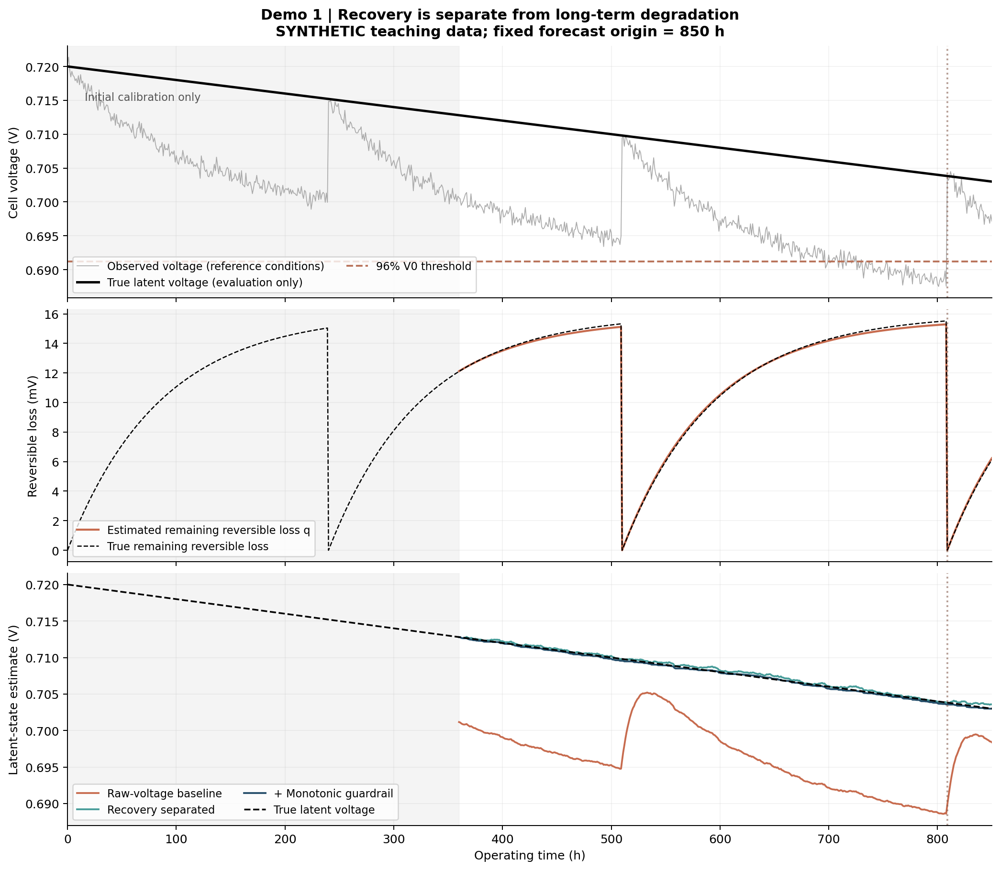
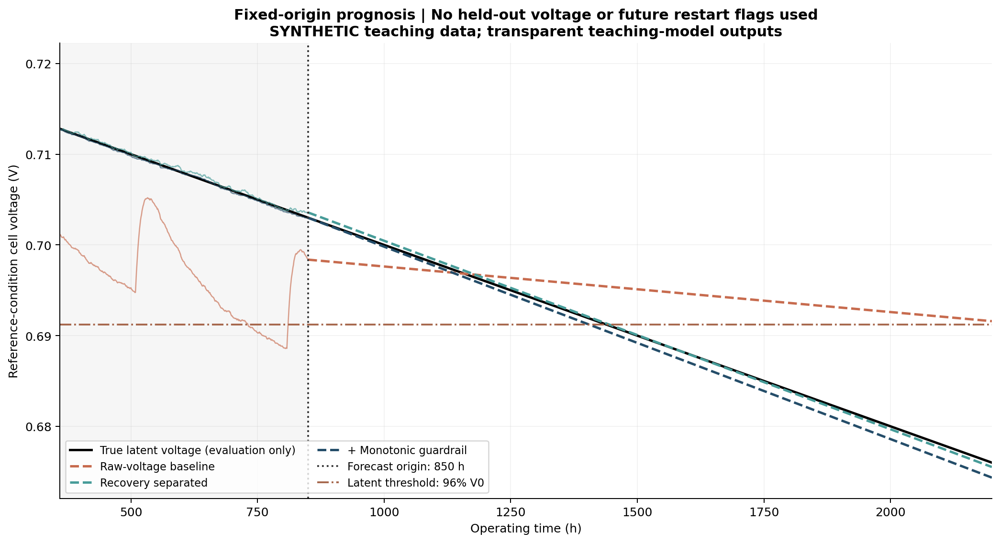
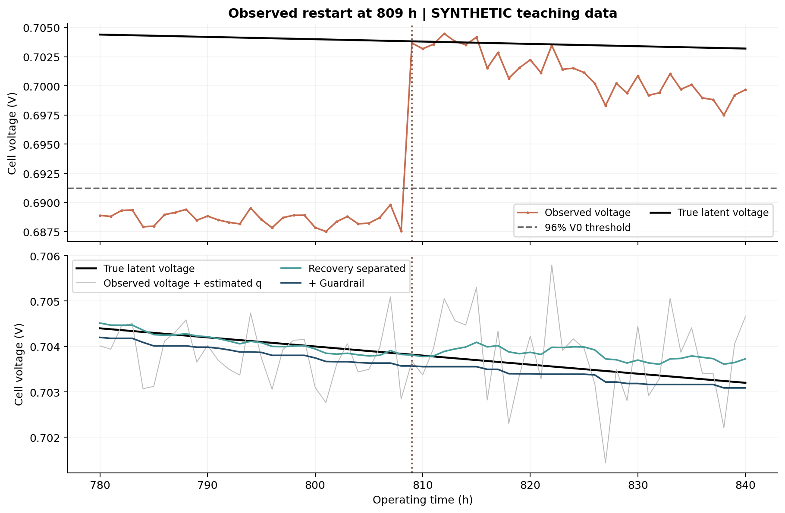

SYNTHETIC DATA · REPRODUCIBLE DEMO
燃料电池健康评估与预测：运行结果
demo1_recovery_guardrail
这是模拟数据演示。图、CSV 和指标来自已执行的代码；不代表 FC1 或 RealHyFC 实测性能。重新运行模型后，执行 python build_report.py 可刷新此报告。
结果图



本次运行说明
Demo 1 运行结果：启停恢复分离与单调护栏
> 全部为固定种子的模拟数据；不是 FC1 实测结果，也不是神经网络或论文性能声明。
实验设置
- 0–360 h：只用历史观测校准恢复龄模型。
- 360–850 h：参数冻结，逐点因果估计长期状态。
- 在 850 h 固定预测起点，之后不再读取未来观测或未来重启标记。
- 阈值 = 0.960 × 0.720 V = 0.6912 V，表示参考电压损失 4%。该阈值仅为教学设定。
- 所有方法用相同 EWMA 系数与 240 h 尾部窗口线性外推，原始电压方法故意省略恢复分离，作为问题基线。
从历史估计出的参数
- 可逆损失饱和幅值：15.6857 mV。
- 时间常数：81.0 h。
- 初始校准阶段的长期电压下降率：20.6085 μV/h。
- 以上参数通过观测拟合；未使用 truth 文件，也未把生成器中的真值参数传入模型。
三种方法对比
评估真值：长期状态在 1440.0 h 达到阈值，因此当前真实 RUL = 590.0 h。
| 方法 | 历史潜态 RMSE / mV | 留出未来潜态 RMSE / mV | RUL / h | RUL 绝对误差 / h | 历史向上步数 |
|---|---|---|---|---|---|
| 原始电压直接外推 | 12.0802 | 8.0160 | 1428.93 | 838.93 | 134 |
| 恢复分离 | 0.2664 | 0.3087 | 595.51 | 5.51 | 190 |
| 恢复分离＋单调护栏 | 0.1582 | 0.9561 | 555.76 | 34.24 | 0 |
历史评分覆盖 360–850 h；未来评分仅包含预测起点之后的 1350 个留出样本，均按单电池电压计算。原始电压基线被当作长期状态代理，其偏差正是本例要展示的问题。
RUL 使用直线的解析交点，可能超出图示预测范围；是否落在图示范围内记录于 metrics.json 的 crossing_within_plotted_horizon。
单调投影消除了潜态估计的向上波动，但不保证每项误差都会下降。本次运行中请同时比较 RUL 误差、历史 RMSE 和未来 RMSE；不要只挑有利指标。
恢复事件检查
- 选取已观测的 809 h 重启事件。
- 重启前后观测电压：0.687552 → 0.703673 V。
- 相邻样本的观测跃升：16.1210 mV，包含测量噪声及相邻采样间隔内的长期衰减。
- 从可逆损失模型估计的恢复量：15.2897 mV。
- 观测跃升需要与可逆状态和工况变化一起解释，不能直接判定长期老化逆转。
随包数据中的 809 h 只是按需求设置的模拟事件，并未声称原始 FC1 数据在该时刻发生相同现象。
文件导航
01_recovery_decomposition.png：原始电压、剩余可逆损失、三种状态估计。02_fixed_origin_forecast.png：固定预测起点后的外推与阈值交点。03_restart_at_809h.png：重启前后的局部放大。history_estimates.csv：逐点因果估计；校准结束前的状态估计为空。future_forecasts.csv：固定起点的未来预测，未回填未来观测。event_recovery_estimates.csv：恢复增量估计与单独评估用真值。metrics.json、model_parameters.json：未四舍五入的数值与拟合参数。checks.json：因果性、未来隔离、truth 隔离、单调性、RUL 和恢复代数检查。
解释边界
这是可解释的小模型验证流程，不是部署用寿命预测器。生成机制和恢复模型在此例中相互匹配；真实的部分恢复、工况变化、未知重启时刻、非线性长期退化会破坏这些简化。真实数据应采用独立诊断或恢复后基准确认长期状态，并对模型失配、估计不确定性和实际业务阈值重新验证。
指标与事件记录
保留 CSV 原字段与精度；横向滚动可查看完整列。
event_recovery_estimates.csv
| restart_time_h | observed_jump_v | estimated_recovered_loss_v | raw_voltage_before_v | raw_voltage_after_v | true_recovered_loss_v | true_latent_before_v | true_latent_after_v |
|---|---|---|---|---|---|---|---|
| 510 | 0.014482242496 | 0.0151191607602 | 0.694978747488 | 0.709460989984 | 0.015324375047 | 0.70982 | 0.7098 |
| 809 | 0.016121049096 | 0.0152896522765 | 0.687551706334 | 0.70367275543 | 0.0155196756291 | 0.70384 | 0.70382 |
全部结果文件


HTML 生成时间：2026-10-29 16:04（北京时间）。页面不需要联网，结果图可点击打开原图。